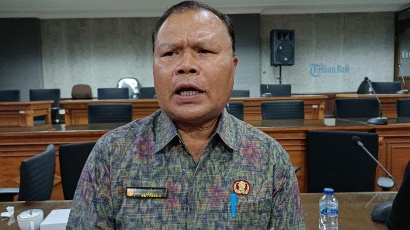

PROVINSI BALI
KOTA DENPASAR
| NIK | : 5171011010880001 | ||
| Nama | : I Made Bayu Sutrisna |  | |
| Tempat/Tgl Lahir | : Denpasar, 10 Oktober 1988 | ||
| Jenis Kelamin | : Laki-laki | Gol Darah : B | |
| Alamat | : Jl. Teuku Umar No. 5A | ||
| RT/RW | : -/- | ||
| Desa/Kel | : Dauh Puri Kauh | ||
| Kecamatan | : Denpasar Barat | ||
| Agama | : Hindu | Status : Belum Kawin | |
| Pekerjaan | : Pelajar/Mahasiswa | ||
| Berlaku hingga | : 10 Oktober 2018 | ||
| Kewarganegaraan | : WNI |